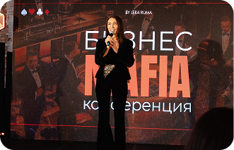
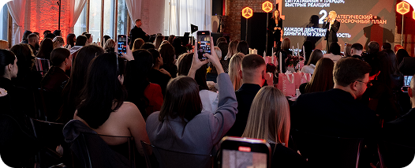

МЕТОДОЛОГИЯ
Система работы с ключевыми зонами бьюти-бизнеса: финансы, маркетинг, клиенты, команда, управление и рост.
Лера Рума × Тихон Беляев
От точки, в которой ваш бизнес находится сейчас, до точки, в которой он растёт системно: с сильной командой, работающим маркетингом, выстроенной финансовой моделью и чётким планом развития.
Присоединиться к CREATORСтарт программы — дата уточняется

Из реального опыта — в ваш бизнес
Комбинация методологии, практических инструментов и наставничества двух предпринимателей, которые развивают бьюти-бизнес на рынках Европы и Украины.
Система работы с ключевыми зонами бьюти-бизнеса: финансы, маркетинг, клиенты, команда, управление и рост.
Лера и Тихон показывают разные подходы к одним и тем же бизнес-задачам на примере Европы и Украины.
Еженедельные онлайн-мастермайнды, вопросы, практические разборы и работа с реальными ситуациями участников.
Вы не просто проходите общую программу, а собираете решения и план действий под свою текущую точку и задачи бизнеса.
В CREATOR основной фокус не на записанных уроках, а на живой работе с участниками и их бизнесами.
На протяжении программы вы будете:
работать над своей персональной стратегией развития;
разбирать конкретные задачи своего бизнеса;
участвовать в еженедельных онлайн-мастермайндах с Лерой и Тихоном;
получать практические разборы и обратную связь;
внедрять инструменты сразу в процессе программы;
видеть, как похожие задачи решаются на двух разных рынках — Украины и Европы.
CREATOR — это наставничество, где знания сразу переходят в работу над вашим бизнесом.
01«Не понимаю, что сейчас делать с бизнесом дальше: усиливать текущую точку, открывать новую или вообще сначала навести порядок внутри».
02«Постоянно проблема с наймом: людей либо нет, либо они не подходят, либо уходят через несколько месяцев».
03«Хочу понять, как сегодня работать и расти на рынке Украины / Европы, потому что старые подходы уже не всегда работают».
04«Команда есть, но всё равно слишком многое держится на мне».
05«Мы привлекаем новых клиентов, но плохо работаем с теми, кто уже был у нас».
06«Администраторы работают, но нету сильных продаж, высокого % возврата клиентов и нормальной работы с базой».
07«Не понимаю, как собрать сильную команду и сделать так, чтобы люди реально были вовлечены в результат бизнеса».
08«Каждый месяц снова думаю, откуда брать клиентов и что ещё поменять в маркетинге».
09«Хочу выйти из постоянной операционки и наконец заниматься развитием бизнеса, а не решением ежедневных проблем».
10«Хочу открыть вторую точку, но боюсь просто увеличить тот хаос, который уже есть».
11«Я хороший мастер, но упёрлась в потолок дохода и не понимаю, как перейти в роль предпринимателя».
12«У меня есть экспертность и аудитория, но я не понимаю, как превратить это в отдельный продукт или новое направление дохода».
CREATOR начинается с понимания вашей текущей точки и реальных задач бизнеса.
диагностируем проект, разбираемся в ключевых показателях, слабых зонах и определяем, что требует внимания именно сейчас.
вы понимаете свою текущую точку и перестаёте хаотично менять всё сразу.
разбираем финансовые показатели, расходы, чистую прибыль, планирование и основные рычаги роста.
вы понимаете, сколько реально зарабатывает бизнес, куда уходят деньги и на какие цифры можете влиять.
собираем маркетинг, контент, привлечение, работу с базой, повторные визиты и клиентский путь в одну систему.
бизнес меньше зависит от случайных записей и постоянного поиска новых клиентов.
работаем с наймом, адаптацией, мотивацией, ответственностью и удержанием сотрудников.
команда становится частью системы бизнеса, а не постоянным источником операционных проблем.
разбираем роль собственника, процессы, контроль, делегирование и работу руководителей.
собственник занимается развитием бизнеса, а не решает каждую задачу лично.
разбираем личный бренд, обучение, новые направления, масштабирование и возможности дополнительной монетизации.
у вас появляется понятная стратегия следующего этапа развития.

Здесь не будет десятков записанных уроков, которые вы обещаете себе когда-нибудь посмотреть. CREATOR построен как живая практическая программа, где информация сразу соединяется с работой над вашим проектом.
Лера и Тихон работают с командами, клиентами, маркетингом, финансами и управлением в разных странах и разных условиях. В CREATOR вы смотрите на бизнес с двух сторон и собираете собственную работающую систему.
Лера Рума — предприниматель, владелица сети арт-бьюти-пространств Krasivo Project в Варшаве и Вроцлаве, развивает собственные проекты и бренд для волос Amazoniko.
Её сильная сторона — умение соединять бизнес, маркетинг и сильный бренд.
В CREATOR Лера делится своим опытом:
построения и развития бьюти-бизнеса в Европе;
маркетинга и привлечения клиентов;
создания сильного бренда вокруг проекта;
развития личного бренда собственника;
контента и медийности;
клиентского опыта и сервиса;
запуска новых продуктов и направлений;
управления и развития команды в растущем бизнесе.
Лера показывает бьюти-бизнес не только как услугу, а как бренд, вокруг которого можно создавать спрос, аудиторию и новые возможности для роста.
Тихон Беляев много лет развивает салонный бизнес на украинском рынке и знает его не по теории, а из ежедневной работы собственника.
В CREATOR Тихон делится опытом:
построения и развития салонного бизнеса;
найма и формирования сильной команды;
работы с мастерами и администраторами;
управления внутренними процессами;
финансов и ключевых показателей бизнеса;
клиентского сервиса;
удержания и возвращения клиентов;
построения сильного и узнаваемого бренда;
масштабирования и роли собственника в растущей компании.
Тихон показывает, как выстраивать бизнес изнутри: от команды и ежедневных процессов до системы, которая позволяет собственнику управлять и развивать проект дальше.
Для тех, кто уже работает на себя, развивает личный бренд, хочет больше зарабатывать, привлекать клиентов системнее и постепенно переходить от работы «на себя» к построению собственного проекта.
Для владельцев салонов, студий, клиник, барбершопов и других бьюти-проектов, которые хотят усилить финансы, маркетинг, команду, клиентскую базу и управление бизнесом.
Для тех, кто хочет развивать личный бренд, упаковывать свою экспертность, запускать обучение, консультации, наставничество и создавать новые направления дохода.
Для тех, кто отвечает за ежедневную работу и развитие бизнеса: команду, процессы, финансы, сервис, маркетинг и показатели проекта — и хочет управлять ими более системно.
Работаете самостоятельно, управляете командой или развиваете большой проект — каждый работает со своей текущей точкой.
Бизнес → финансы → команда → сервис → клиентская база → маркетинг → личный бренд → дальнейший рост.
В каждом блоке: видеоподкаст, практическая работа, материалы, онлайн-мастермайнд, вопросы и внедрение.
Прежде чем менять маркетинг, нанимать новых людей или открывать следующую точку, важно увидеть бизнес целиком и понять, что действительно требует внимания в первую очередь.
В этом блоке участники проводят полную диагностику своего проекта и отдельно разбирают роль собственника внутри бизнеса.
как объективно оценить текущую точку бизнеса;
основные зоны, которые влияют на результат: финансы, маркетинг, клиенты, команда, сервис и управление;
какие показатели собственник должен видеть регулярно;
как находить слабые зоны, которые тормозят дальнейший рост;
почему бизнес начинает слишком сильно зависеть от собственника;
чем собственник должен заниматься лично, а какие задачи пора передавать команде;
как отличить проблему от её последствия;
как выбрать несколько приоритетных задач вместо попытки исправить всё одновременно;
как определить свою следующую точку развития.
Провести полный чек-ап своего проекта, определить сильные и слабые зоны и сформировать основные задачи, с которыми участник будет работать на протяжении CREATOR.
CREATOR BUSINESS CHECK-UP — диагностика основных зон бизнеса;
чек-лист собственника;
таблица ключевых показателей бизнеса.
Вы понимаете, где находится ваш проект сейчас, что конкретно мешает ему двигаться дальше и какие задачи должны стать приоритетными на время программы.
Можно иметь полную запись, команду и высокий оборот — и при этом получать значительно меньше прибыли, чем должен приносить бизнес.
В этом блоке разбираем финансовую модель бьюти-проекта и учимся смотреть на бизнес через цифры.
Отдельно будем говорить о реалиях Украины и Европы: расходах, стоимости команды, аренде, ценообразовании и разных финансовых моделях.
основные финансовые показатели, на которых строится бьюти-бизнес;
оборот, валовую и чистую прибыль, рентабельность;
какие цифры собственник должен контролировать ежедневно, еженедельно и ежемесячно;
как понимать реальную прибыль бизнеса;
основные рычаги увеличения чистой прибыли;
оптимизацию расходов без ухудшения качества продукта и сервиса;
фонд оплаты труда и его влияние на финансовую модель;
расходы на аренду, материалы, маркетинг и команду;
ценообразование и стоимость услуг;
финансовое планирование на месяц, квартал и год;
как оценивать новые идеи и решения до того, как вкладывать в них деньги;
чем финансовая модель бизнеса в Европе может отличаться от украинской.
Собрать финансовую картину своего проекта, посчитать ключевые показатели, определить основные статьи расходов и найти потенциальные рычаги роста чистой прибыли.
Excel-таблица финансового учёта;
дашборд собственника;
таблица финансового планирования;
шаблон расчёта рентабельности;
чек-лист аудита расходов.
Вы понимаете, сколько ваш бизнес зарабатывает на самом деле, куда уходят деньги, какие показатели требуют контроля и за счёт чего можно увеличивать прибыль.
Одна из самых сложных частей бьюти-бизнеса — люди.
Найти сильного сотрудника недостаточно. Его нужно правильно выбрать, адаптировать, встроить в процессы, мотивировать и создать условия, в которых он захочет оставаться и развиваться вместе с компанией.
где сегодня искать мастеров, администраторов и других сотрудников;
как выстраивать воронку найма;
как проводить собеседования и на что смотреть кроме профессиональных навыков;
как понять ещё на этапе найма, подходит ли человек вашему проекту;
адаптацию нового сотрудника;
стандарты работы и ответственность внутри команды;
финансовую и нематериальную мотивацию;
проценты, KPI и дополнительные системы мотивации;
как удерживать сильных сотрудников;
работу со звёздными, но сложными мастерами;
токсичных сотрудников и конфликты внутри команды;
что делать, если сотрудник хочет уйти и забрать клиентов;
роль администратора и управляющего;
как перестать контролировать каждый процесс самостоятельно.
Отдельно будем сравнивать, как работа с командой устроена на рынках Украины и Европы, где отличаются ожидания сотрудников, модели оплаты и сам подход к найму.
Провести аудит своей команды и системы найма: определить слабые места, пересобрать путь нового сотрудника от вакансии до адаптации и определить задачи по действующей команде.
шаблон вакансии;
чек-лист собеседования;
таблица оценки кандидата;
чек-лист адаптации сотрудника;
шаблон KPI;
гайд по мотивации команды;
чек-лист аудита действующей команды.
Вы понимаете, кого вам нужно нанимать, как выбирать и адаптировать людей, как работать с действующей командой и какие процессы должны перестать зависеть только от вас.
В бьюти клиент оценивает не только результат услуги.
Первое сообщение, запись, встреча, работа администратора, пространство, мастер, коммуникация после визита — всё это формирует впечатление о бренде и влияет на то, вернётся человек или нет.
полный клиентский путь от первого касания до повторного визита;
на каких этапах чаще всего теряется клиент;
коммуникацию до, во время и после посещения;
роль администратора в клиентском опыте;
стандарты сервиса;
как создавать сервис, который можно масштабировать на всю команду;
атмосферу и детали, которые формируют восприятие бренда;
как работать с жалобами и сложными ситуациями;
как собирать и использовать обратную связь клиентов;
как сервис влияет на возврат, рекомендации и продажи;
что отличается в ожиданиях клиентов на европейском и украинском рынках.
Пройти путь своего клиента от первого знакомства с проектом до следующей записи и провести аудит всех ключевых точек контакта.
карта клиентского пути;
чек-лист аудита сервиса;
шаблон стандартов обслуживания;
скрипты основных коммуникаций с клиентом;
форма сбора обратной связи;
чек-лист работы администратора.
Вы увидите бизнес глазами клиента и поймёте, что нужно изменить, чтобы сервис стал частью системы, усиливал бренд и помогал возвращать клиентов.
Очень часто бизнес постоянно вкладывается в привлечение новых клиентов, но практически не работает с людьми, которые уже были в салоне, покупали продукт, интересовались услугами или давно не возвращались.
В этом блоке разбираем клиентскую базу как отдельный актив бизнеса.
как правильно работать с действующей базой;
какие показатели возврата клиентов нужно отслеживать;
повторную запись;
как возвращать клиентов, которые давно не приходили;
сегментацию базы;
разные сценарии коммуникации для разных групп клиентов;
рассылки и персональные предложения;
акции: когда они работают, а когда просто уменьшают маржу;
дополнительные продажи и повышение среднего чека;
как использовать CRM;
как оценивать реальную ценность клиентской базы;
как сделать так, чтобы маркетинг не заканчивался после первого визита.
Провести аудит своей клиентской базы, разделить её на основные сегменты и собрать план работы с повторными визитами и возвращением клиентов.
Excel-таблица анализа клиентской базы;
шаблон сегментации;
скрипты возвращения клиентов;
примеры рассылок;
таблица контроля повторной записи;
чек-лист работы с «уснувшей» базой.
Вы понимаете, как системно работать с уже существующими клиентами, повышать возвращаемость и получать больше результата от базы, которую бизнес уже собрал.
Красивого Инстаграма и периодических рилс уже недостаточно.
В этом блоке разбираем, как собрать маркетинг вокруг целей бизнеса: кого привлекаем, что продаём, через какие каналы и как понимаем, работает это или нет.
как строится маркетинговая система бьюти-проекта;
позиционирование и отличие от конкурентов;
кому и что вы продаёте;
Инстаграм как инструмент доверия и привлечения клиентов;
контент и рилс;
какие смыслы должен транслировать бренд;
рекламные кампании и основные показатели эффективности;
стоимость привлечения клиента;
работу с блогерами;
коллаборации и партнёрства;
локальный маркетинг;
акции и специальные предложения;
как связать маркетинг с продажами и клиентской базой;
как планировать продвижение, а не придумывать его каждый день заново;
какие инструменты отличаются на рынках Украины и Европы.
Провести аудит текущего маркетинга и собрать маркетинговый план своего проекта: аудитория, позиционирование, каналы привлечения, контент и основные действия на ближайший период.
шаблон маркетингового плана;
таблица каналов привлечения;
Excel-таблица контроля маркетинговых показателей;
чек-лист аудита Инстаграма;
матрица контента;
гайд по работе с блогерами и коллаборациями;
шаблон планирования рекламных активностей.
У вас появляется понимание, как должен работать маркетинг именно вашего проекта, на какие каналы делать ставку и как связать продвижение с реальными задачами бизнеса.
Личный бренд нужен не для того, чтобы просто стать блогером.
Для мастера, эксперта или собственника он может работать на клиентов, доверие, найм, партнёрства, медийность, продажи и новые направления бизнеса.
зачем именно вам нужен личный бренд;
какую роль он должен играть в вашем бизнесе;
позиционирование собственника или эксперта;
что показывать и о чём говорить в контенте;
как соединять личное и профессиональное;
как говорить о бизнесе без ощущения постоянных продаж;
как формировать доверие к себе как к эксперту и предпринимателю;
как личный бренд собственника усиливает бренд компании;
как через медийность привлекать клиентов, сотрудников и партнёров;
как монетизировать личный бренд;
как строить его системно, даже если вы не хотите превращать жизнь в постоянный контент.
Определить роль своего личного бренда, собрать позиционирование, основные темы и понятную систему коммуникации на ближайший период.
рабочая тетрадь по позиционированию;
матрица личного бренда;
шаблон контентных направлений;
чек-лист упаковки профиля;
гайд по проявлению собственника в контенте;
план развития личного бренда.
Вы понимаете, зачем вам личный бренд, что через него транслировать и как превратить свою публичность в инструмент, который помогает развивать бизнес.
Рост — это не всегда ещё один салон.
Для одного участника следующим шагом станет новая точка, для другого — собственное обучение, для третьего — продукт, консультации, выход на другой рынок или развитие личного бренда.
Последний блок CREATOR посвящён тому, куда бизнес может двигаться дальше и как выбрать направление, которое действительно подходит именно вам.
какие варианты роста есть у бьюти-предпринимателя;
когда имеет смысл масштабировать существующий бизнес;
как понять, готов ли проект к открытию следующей точки;
как упаковывать свою экспертность;
создание обучающих продуктов;
наставничество и консультации;
развитие обучающего центра;
собственные продукты и дополнительные направления;
как оценивать потенциал новой идеи до запуска;
как использовать личный бренд для запуска нового направления;
как не распыляться между десятью идеями;
как выбрать следующую точку роста исходя из ресурсов, опыта и текущего состояния бизнеса.
Определить следующий этап развития своего проекта, оценить возможные направления и сформировать план первых действий по выбранной стратегии.
карта вариантов масштабирования;
таблица оценки новой бизнес-идеи;
шаблон расчёта нового направления;
рабочая тетрадь по упаковке экспертности;
чек-лист готовности бизнеса к масштабированию;
шаблон плана запуска нового направления.
Вы понимаете, куда вашему проекту имеет смысл расти дальше, какое направление сейчас действительно приоритетно и какие первые шаги нужно сделать.
К финалу у вас собрана рабочая база по собственному проекту: диагностика, расчёты, таблицы, решения, маркетинговый план, задачи по команде и план дальнейшего развития.
Получаете доступ к экспертному видеоподкасту Леры и Тихона, в котором они разбирают тему через собственный опыт, конкретные кейсы и реалии рынков Украины и Европы.
После каждого блока получаете практическое задание, таблицу, чек-лист или другой инструмент и применяете его к своему бизнесу, команде, маркетингу или личному бренду.
Каждую неделю встречаемся онлайн, чтобы глубже разобрать тему, ответить на вопросы участников и посмотреть реальные ситуации из бизнеса.
Лера, Тихон и команда программы помогают увидеть слабые места, скорректировать решения и понять, что стоит менять именно в вашей ситуации.
Фиксируете решения, внедряете их в работу и переходите к следующей зоне бизнеса уже с конкретным результатом предыдущего блока.
Лера Рума и Тихон Беляев разбирают ключевые темы бьюти-бизнеса через два предпринимательских опыта и два рынка.
Живые встречи с Лерой и Тихоном: вопросы, обсуждение темы недели, бизнес-ситуации и работа с участниками.
Работа с реальными салонами, студиями, мастерами, экспертами и другими бьюти-проектами внутри программы.
После каждого блока — конкретная работа со своим проектом, а не просто следующий урок.
Помощь по программе, заданиям и внедрению, чтобы не остаться один на один с материалами.
Вопросы, общение, обмен опытом и поддержка участников на протяжении всей программы.
Таблицы, чек-листы, шаблоны, скрипты, инструкции и дополнительные материалы по каждому блоку.
Все видеоподкасты, задания, материалы и записи живых встреч собраны в одном месте.
На протяжении CREATOR мы берём реальные проекты и ситуации участников и разбираем их вместе на онлайн-встречах.
Это может быть:
салон, в котором не хватает загрузки;
бизнес, который делает хороший оборот, но собственник недоволен прибылью;
проект, который постоянно сталкивается с проблемами найма;
команда, в которой слишком многое завязано на собственнике;
салон с большой клиентской базой, но низким процентом возврата;
мастер, который готовится открыть первую студию;
собственник, который хочет открыть вторую точку;
эксперт, который хочет запустить или усилить обучающее направление;
личный бренд, который есть, но пока почти не влияет на продажи бизнеса.
Даже если разбирают не ваш проект, вы находите решения, актуальные для своего бизнеса.
Понимание ключевых показателей бизнеса, расходов, прибыли и финансового планирования.
Понимание, какие инструменты продвижения нужны вашему проекту и как собрать их в одну систему.
План работы с действующими клиентами, повторными визитами, возвратом и продажами.
Пересобранный подход к найму, адаптации, мотивации и управлению сотрудниками.
Понимание своей роли в бизнесе: что контролировать, что делегировать и где перестать быть главным исполнителем.
Понимание, как использовать личный бренд для усиления доверия, бизнеса и новых направлений роста.
Понимание, куда развивать проект дальше и какие задачи должны стать приоритетными после программы.
Основная программа и еженедельные мастермайнды — во всех форматах. Разница — в глубине обратной связи, количестве разборов и персональной работе с вашим проектом.
ПОЛНОЕ ПРОХОЖДЕНИЕ ОСНОВНОЙ ПРОГРАММЫ
Для тех, кто хочет пройти CREATOR в полном объёме, разобрать ключевые зоны своего проекта и внедрять инструменты программы в собственном темпе, оставаясь внутри общей работы с Лерой, Тихоном и участниками.
В программе:
Результат тарифа: вы получаете всю методологию CREATOR, проходите каждый блок вместе с программой и последовательно работаете над финансами, маркетингом, клиентской базой, командой, управлением, личным брендом и дальнейшим развитием своего проекта.
ИНДИВИДУАЛЬНОЕ СОПРОВОЖДЕНИЕ ВО ВРЕМЯ ВСЕЙ ПРОГРАММЫ
Для тех, кому важно не просто пройти CREATOR, а регулярно работать со своими задачами вместе с ментором, получать персональную обратную связь и помощь во внедрении.
Всё из CREATOR, а также:
Результат тарифа: вы проходите программу не самостоятельно — рядом есть человек, который знает вашу текущую ситуацию, помогает держать фокус и разбирать вопросы по мере их появления.
ПЕРСОНАЛЬНАЯ РАБОТА С ЛЕРОЙ РУМОЙ И ТИХОНОМ БЕЛЯЕВЫМ
Самый глубокий формат CREATOR для собственников и предпринимателей, которым важно работать над своим бизнесом непосредственно с Лерой и Тихоном и получать их обратную связь на протяжении всей программы.
Всё из CREATOR PRO, а также:
Команда CREATOR поможет подобрать вариант под вашу текущую точку и задачи.
После регистрации вам приходит вся организационная информация и доступ к обучающей платформе CREATOR.
Получаете доступ к рабочему чату участников, где будет проходить коммуникация с командой программы и другими бьюти-предпринимателями.
Перед началом основной работы определяете свою текущую точку: финансы, маркетинг, клиентская база, команда, управление и основные задачи бизнеса.
Календарь всех блоков, мастермайндов, разборов и заданий — чтобы заранее понимать, как будет построена работа.
Смотрите первый видеоподкаст, выполняете практическое задание и начинаете работать уже со своим проектом.
Да. Программа подходит частным мастерам, которые уже работают в бьюти и хотят системнее развивать себя как проект, увеличивать доход, усиливать маркетинг и личный бренд или готовятся к открытию собственного бизнеса.
Да. Вы сможете заранее разобраться в финансах, маркетинге, найме, клиентском сервисе и роли собственника — и избежать части ошибок, которые часто совершаются уже после открытия.
Да. Значительная часть программы рассчитана именно на действующий бизнес: финансы, найм, команда, клиентская база, маркетинг, управление, роль собственника и дальнейший рост.
Да. Одна из ключевых особенностей CREATOR — опыт двух рынков: Украины и Европы. Мы будем отдельно говорить о различиях в клиентах, команде, маркетинге, расходах и подходах к ведению бизнеса на разных рынках.
Да. Программа проходит онлайн, поэтому присоединиться можно из любой страны.
Программа рассчитана на 6 недель. За это время вы последовательно пройдёте все основные блоки и будете параллельно работать со своим проектом.
В среднем — 6-7 часов в неделю на просмотр материалов, участие в онлайн-встречах и практическую работу.
Мы не ставим задачу занять всё ваше свободное время. CREATOR построен так, чтобы программу можно было совмещать с управлением бизнесом и работой.
Все основные онлайн-встречи записываются и будут доступны участникам на платформе.
Участники заранее передают свои вопросы и бизнес-ситуации. На онлайн-встречах Лера и Тихон выбирают кейсы и разбирают их вместе с участниками: исходную ситуацию, проблему, возможные решения и следующие действия.
Механика участия в личных разборах зависит от выбранного тарифа.
На протяжении программы участников сопровождает команда кураторов. Они помогают с навигацией по программе, заданиями и организационными вопросами и собирают запросы для дальнейшей работы с экспертами.
Доступ к программе и записям сохраняется в зависимости от тарифа после завершения CREATOR.
Да. Доступна внутренняя рассрочка от компании, а также оплата частями через Monobank и ПриватБанк сроком до 6 месяцев.
Условия и доступные варианты оплаты команда CREATOR подберёт при оформлении участия.
Да. После завершения программы участники получат сертификат CREATOR о прохождении программы.
Лера Рума × Тихон Беляев
Сильный бьюти-бизнес строится из системы.
Начните собирать свою.
Дата старта уточняется